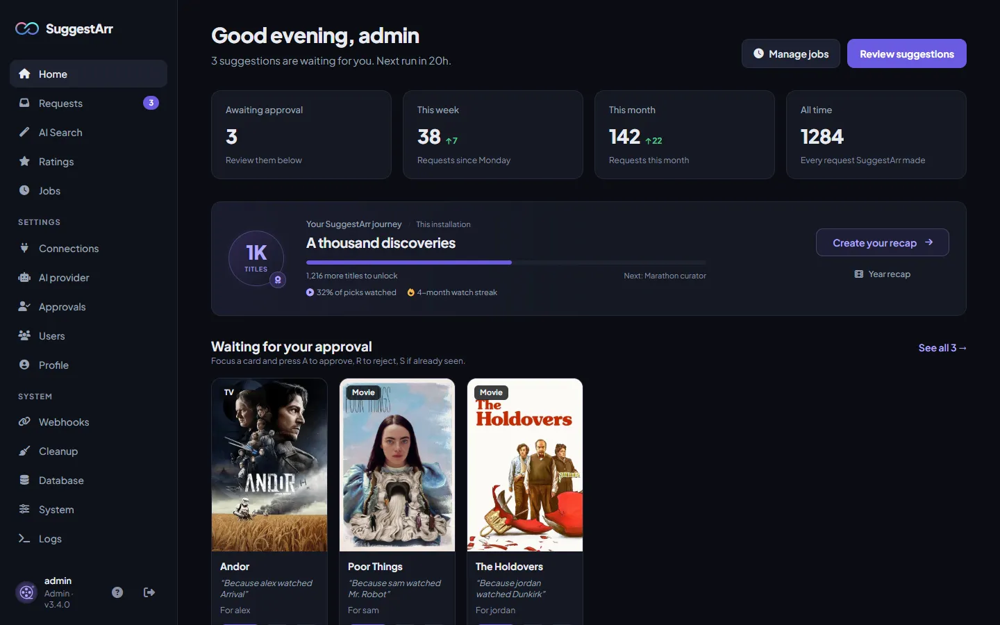
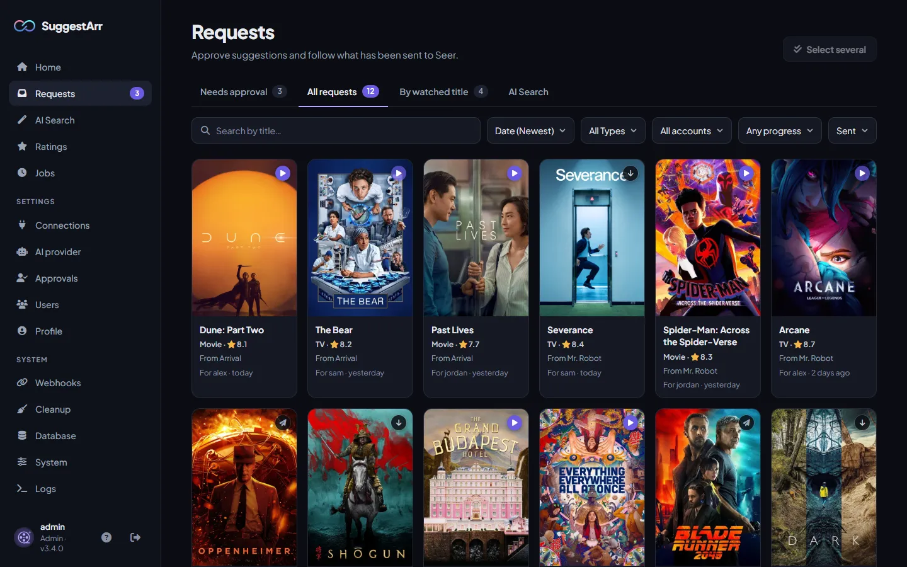
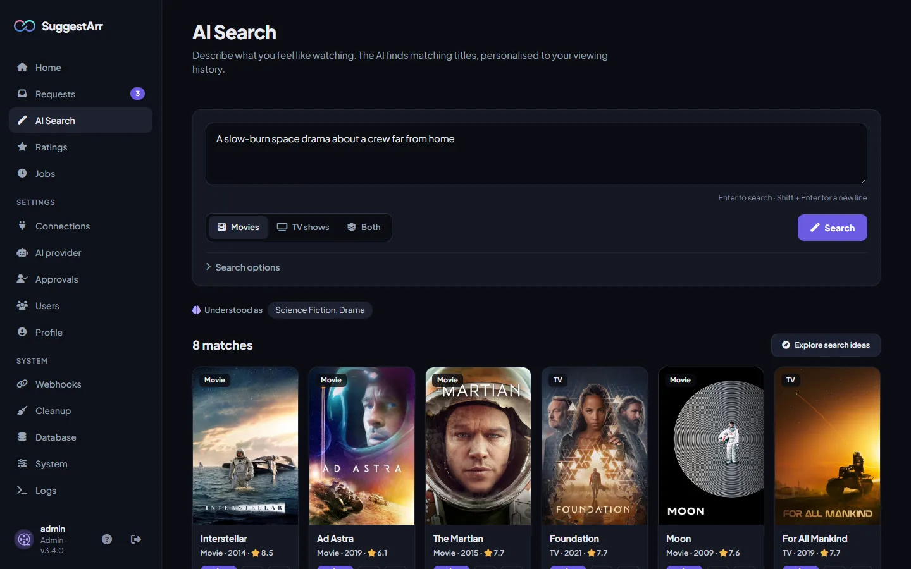
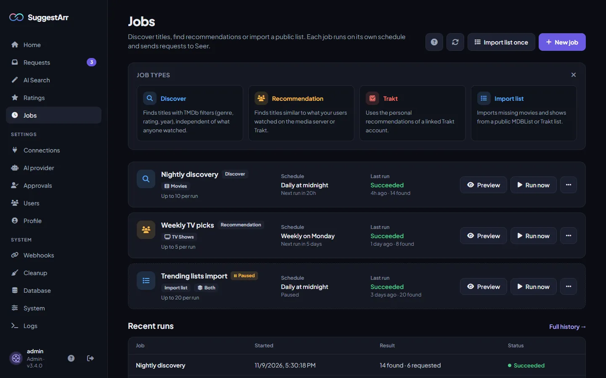

Free, open source, self-hosted
Recommendations from what you watch, requested automatically.
SuggestArr reads watch history from Jellyfin, Plex or Emby, finds similar titles with TMDb or an AI model, and requests them through Seer or straight to Radarr and Sonarr.

How it works
-
Watch
SuggestArr reads what each user recently watched on Jellyfin, Plex or Emby. Trakt, Simkl and imported history can add more.
-
Suggest
It finds similar titles on TMDb, or asks an OpenAI-compatible model that gives a short reason for each pick. Filters skip what is already on your streaming services, below your quality bar or not for that user.
-
Request
Suggestions go to Seer, or straight to Radarr and Sonarr without Seer. Turn on approval to review each one first.
Features
-
AI Search
Describe what you feel like watching in plain language and request a result in one click.
-
Approval and control
Approve suggestions before they are sent, pause jobs while requests or downloads are still pending, and auto-decline stale Seerr requests.
-
Cleanup
Removes old SuggestArr requests nobody added to favorites and can delete their media files, only for titles SuggestArr tagged. Off and in dry-run mode by default.
-
List import
Import public lists from MDBList or Trakt, once or on a schedule.
-
Notifications and ratings
Discord, Telegram and ntfy notifications that say why a title was picked, one-tap rating prompts, and shareable recaps.
-
Built to self-host
A web UI with a setup wizard, schedules and live logs. SQLite, PostgreSQL or MySQL. A public REST API with Swagger UI.
Screenshots



Users in these screenshots are fictional. Titles, ratings and posters come from TMDb. This product uses the TMDB API but is not endorsed or certified by TMDB.
Install
Docker Compose
services:
suggestarr:
image: ciuse99/suggestarr:latest
container_name: SuggestArr
restart: always
ports:
- "${SUGGESTARR_PORT:-5000}:${SUGGESTARR_PORT:-5000}"
volumes:
- ./config_files:/app/config/config_files
environment:
- LOG_LEVEL=${LOG_LEVEL:-info}
- SUGGESTARR_PORT=${SUGGESTARR_PORT:-5000}Run docker compose up -d, open http://localhost:5000 and follow the setup wizard. The image is also on ghcr.io/giuseppe99barchetta/suggestarr.
You need
- Docker (or Python 3)
- A free TMDb API key
- Jellyfin, Plex or Emby
- Seer, or Radarr v5+ and Sonarr v4+
- Optional: an OpenAI-compatible model, PostgreSQL or MySQL
Other ways to install
- TrueNAS SCALE community catalog
- Unraid Community Applications
- Installation guide: source install, reverse proxy, authentication, backups